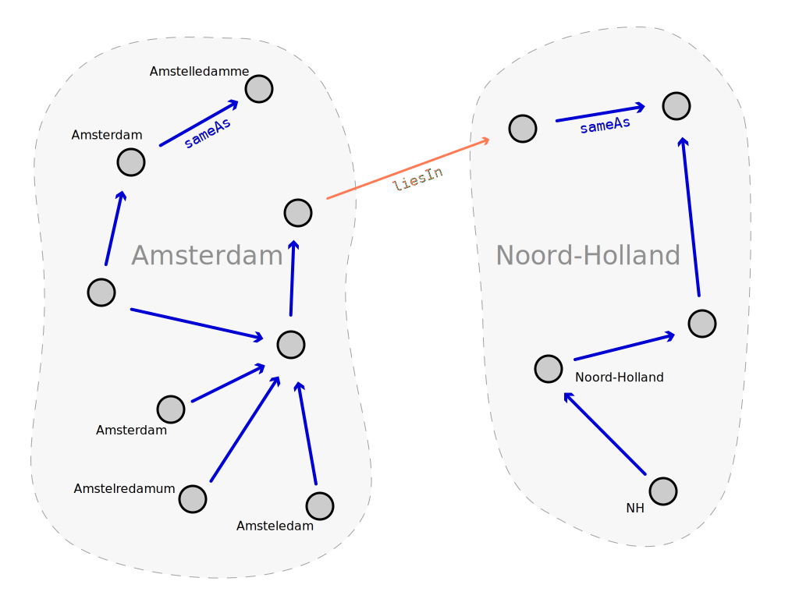

Hi!
I'm Bert Spaan!
Software Engineer + Cartographer
Previously: Histograph, Waag Society, Amsterdam
Currently: Space/Time Directory, NYPL Labs
Histograph
Search engine / geocoder / data API for historical place names
Imports data from different data sources: GeoNames, TGN, DBpedia, monuments, archives, etc.
Graph of place names: Amsterdam from GeoNames sameAs Amsterdam from TGN
Old names, alternative spellings: Amstelledamme sameAs Amsterdam
Hierarchy: Amsterdam liesIn Noord-Holland
Old hierarchies: Akersloot absorbedBy Castricum
Example: old names of streets!
Space/Time Directory
Maps: Map depicts Polygon
Photos: Photo depicts Location
Questions: are there photos of this area is this year?
Questions: what is the old name of this street?
Questions: which buildings are on this photo?
Histograph: Neo4j + Elasticsearch

Problem: no nodes for concepts, paths of arbitrary length, what to do with data linked to URIs the system does not yet know about?
Histograph solves this problem!
Live demo!
Thanks!